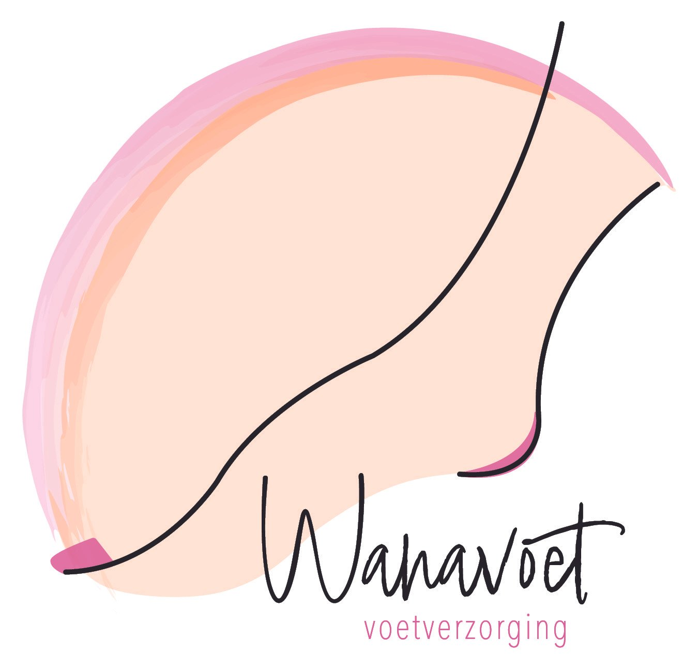
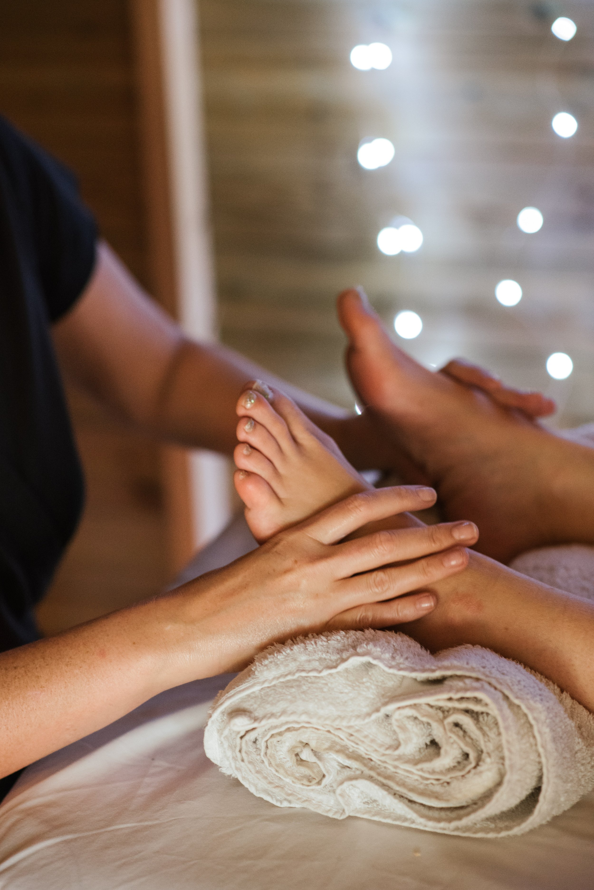
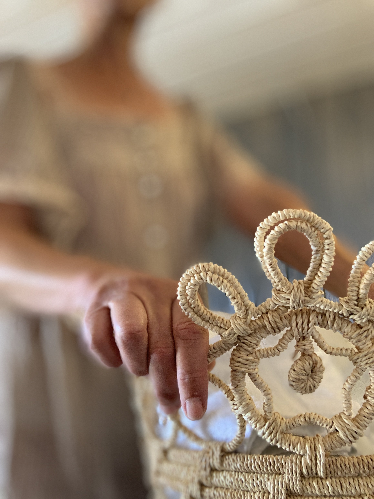
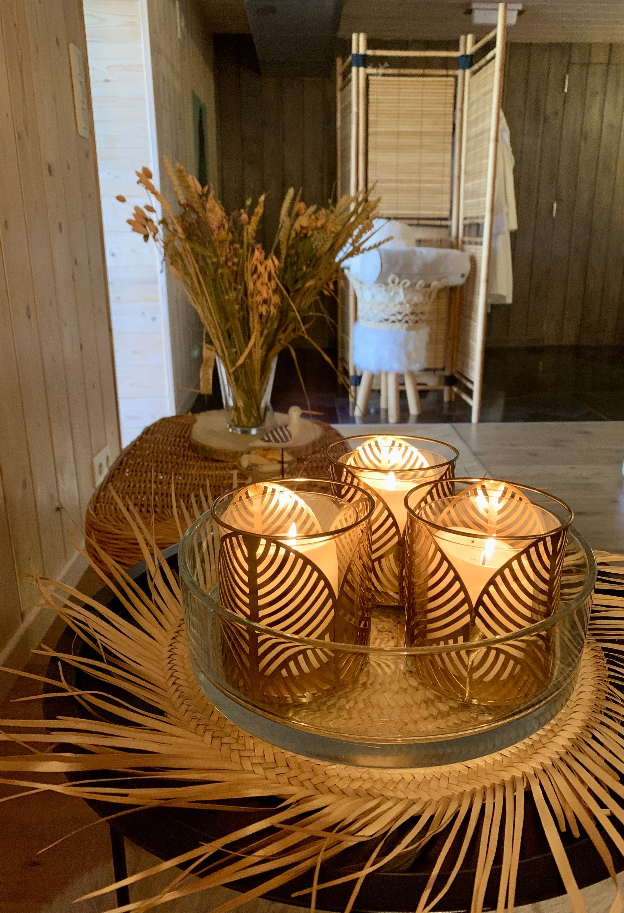
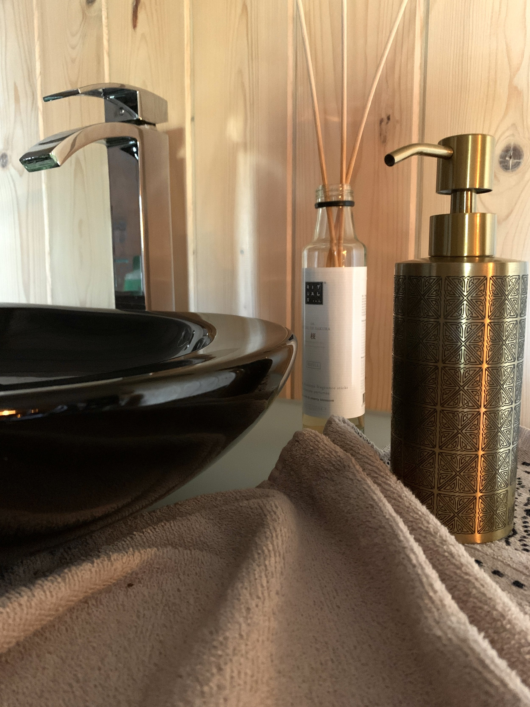
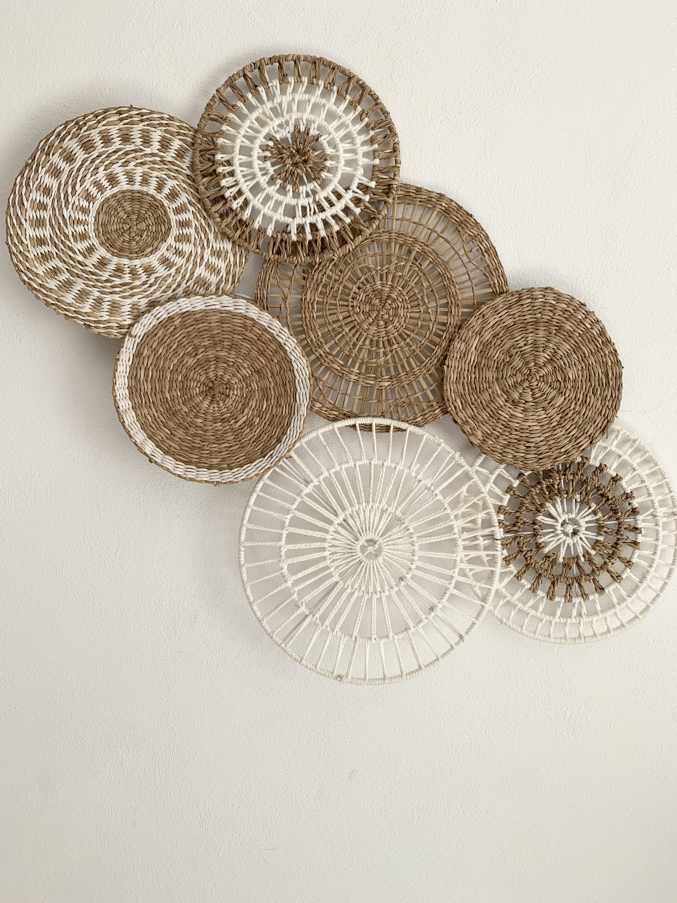
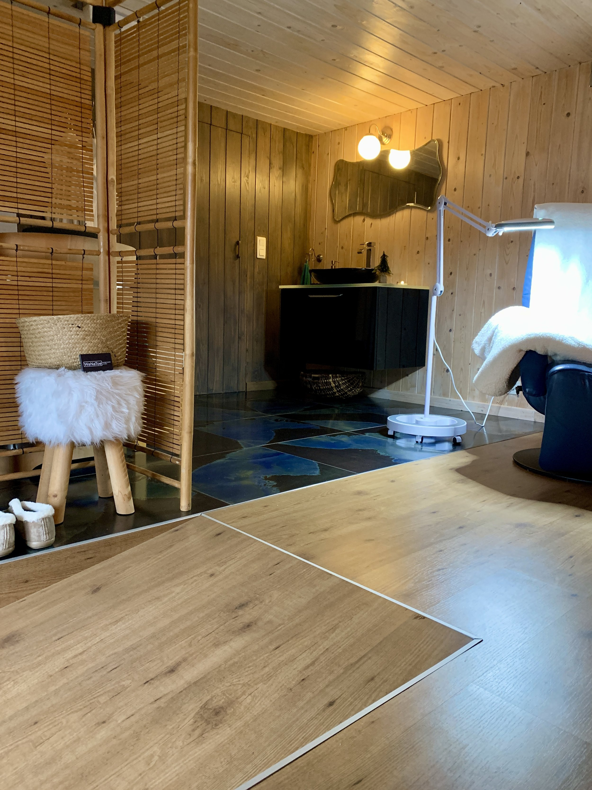

Voetverzorging
voor hem en haar
Ann Van de Capelle
Waalhovestraat 62
9404 Aspelare
Maak hier jouw afspraak:
Gsm: 0487 45 00 93
Mail: wanatoe@telenet.be
Over Wanavoet
Ann Van de Capelle (1962) is gecertificeerd in de gespecialiseerde voetverzorging (cvo Groeipunt - volwassenenonderwijs).







Behandelingen
Pedicure
Een goede voetverzorging ondersteunt een natuurlijke lichaamshouding, zodat pijn bestreden kan worden. Na een voetonderzoek pas ik mijn werktechniek aan om u als klant optimaal comfort te bieden.
- Knippen en vijlen van de nagels
- Reinigen van de nagels (nagelriemen, nagelwallen en nagelplaat)
- Instrijken met voetcrème
Ik behandel ook: Eelt, Eeltpit, Likdoorn, Hoornnagel
Massage voeten en onderbenen
Er is geen twijfel over dat gezonde voeten de basis zijn voor een gezonde levensstijl. Helaas zijn we vaak zo druk bezig met onze bezigheden dat we onze voeten vaak vergeten.
Een massage van voet en onderbenen biedt echter de ondersteuning om de voeten in goede conditie te houden.
Pedicure & Spa-pedicure
Wellness voor jouw voeten.
- Voetbad
- Pedicure
- Voetscrub
- Hydraterend masker
- Instrijken met voetcrème
Lakken
Nagellak op de nagels ziet er vaak heel vrolijk uit.
Ik breng eerst een base coat aan, daarna 1 of 2 lagen nagellak, in een kleur die u wenst. Als deze laag goed droog is, eindig ik met een topcoat, dan blijft uw nagellak echt langer zitten.
Paraffine voetpakking
Een paraffinebad verrijkt met etherische oliën is pure wellness voor de voeten. Bijzonder geschikt bij reumatische aandoeningen, kloven, eczeem en wintervoeten. De behandeling bestaat uit: een voetbad, gevolgd door een paraffine voetpakking.